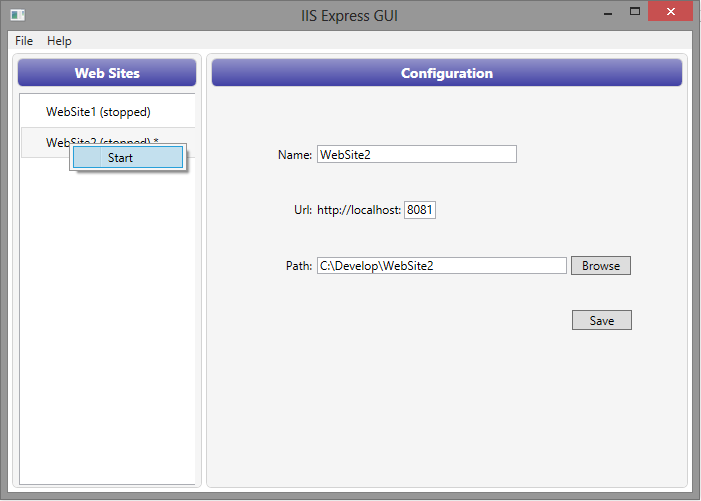
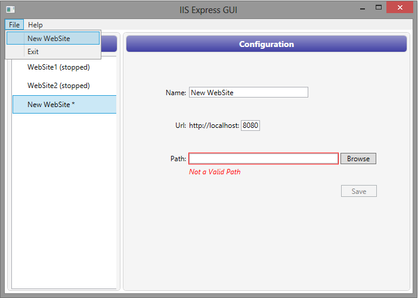

IIS Express GUI
Project Description
The GUI for IISExpress (version 7.5 and 8.0)
Summary
This project is a GUI for IISExpress, born to provide an easy way to start/stop web sites managed via IISExpress and to add new Web Sites to IISExpress configuration.It can be useful if you don't want to open a command line or Visual Studio to run IISExpress or if you want to configure a web site to be run with IISExpress without opening Visual Studio.
It's a WPF application written in C# and it provides the following features:
- Add new WebSite
- Modify existing WebSite configuration
- Start/Stop WebSite
Installation
Just Download the zip file, unzip wherever you want and run the: IISExpressGUI.exe file.
Introduction
At the moment the application works only with IISExpress installed under the default installation path: %Program Files%\IIS Express.
At the moment the application doesn't know if you start/stop a WebSite with the tray icon application, the command line or Visual Studio.
At first StartUp, if the IISExpress configuration file (applicationhost.config) is not found in the default directory, you will be prompted to run an instance of IISExpress in order to create it.
In fact if running IISExpress without specifying any website the following happen:
- a default configuration file is created
- a website folder is created (copied from IISExpress installation path) under IIS default web sites folder
- the new website is configured in the freshly created applicationhost.config file
If you choose: YES when prompted, IISExpressGUI will run IISExpress and then stop it once created the configuration file.
IISExpressGUI will then startup showing only the default website in the left list.
Edit and Save
The main window will show the list of web sites already added to IISExpress configuration (say web sites previously run by Visual Studio with IISExpress).
If you select one you can edit and save your changes:
- web site name
- port number
- the physical path of the folder containing the website
As soon as you move your focus out of the textbox you wrote in you will get validation errors if any, otherwise the Save button will be enabled:


Start and Stop
If you right click on a WebSite on the left side, a context menu will pop up allowing you to start/stop the WebSite depending on its current status:

Create new WebSite
If you open the File Menu Item in the top left of the window and select:
New WebSite a new WebSite will be added to the list on the left and it will be selected so that you can configure it on the right panel.
The new WebSite cannot be run until you Save it:
